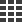
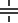
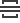

Toolbox
The Toolbox contains elements (report controls) that can be added to a report being edited in the Web Report Designer. Different controls correspond to various kinds of data that can be displayed in a report.
To add a new control to the report, drag the corresponding item from the Toolbox and drop it onto the required report band.
The available report controls can be divided into the following categories.
General Content
The following controls are most commonly used to display data in a report.
| Icon | Control Name |
|---|---|
| Barcode | |
| Check Box | |
| Gauge | |
| Label | |
 |
Character Comb |
 |
Picture Box |
| Rich Text | |
|  | Table |
| Zip Code |
Extended Data
The following controls are connected to data individually, without accessing a report's data source.
| Icon | Control Name |
|---|---|
 |
Chart |
 |
Pivot Grid |
| Sparkline |
Report Layout
The following controls allow you to draw shapes in a report and customize the report layout.
| Icon | Control Name |
|---|---|
|  | Cross-Band Line |
|  | Cross-Band Box |
| Line | |
 |
Page Break |
| Panel | |
| Shape | |
| Subreport |
Document Statistics
The dynamic content of the following controls is not obtained from a data source.
| Icon | Control Name |
|---|---|
| Page Info | |
| Table of Contents |